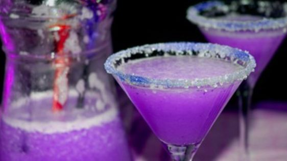

Family Cook Off

CockTail
Prep time:
5 minutes
Price:
R32.90
Ingredients
45 ml smirnoff no. 21 vodka
20 ml sour raspberry liqueur
20 ml blue curacao
5 ml lime cordial
180 ml cranberry juice cocktail
4 -5 ice cubes
Steps
Pre-chill vodka in freezer. (Recommended: Pre-chill all ingredients instead of using too much ice; which can dilute the drink).
Pre-chill large/9 ounce wine glass in freezer.
Add about 4-6 ice cubes into the wine glass.
Add vodka, raspberry liqueur, blue curacao, lime cordial, and cranberry cocktail.
Stir or shake gently and serve.
Requests
Place Order